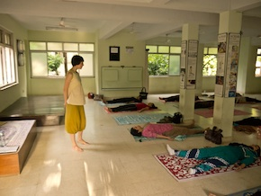
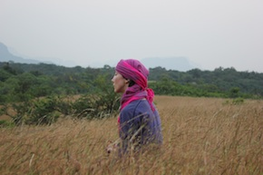
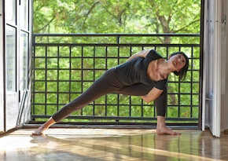
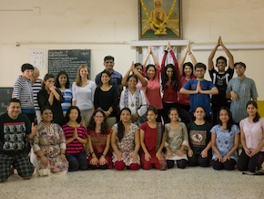

My Yoga Story
Trying to describe the difference yoga made in my life, I would compare it with the sun behind and out of clouds. Everything is still standing where it used to be, but painted in brighter, more vibrant colours, feeling fuller, richer and more real. Yoga brought together so many different puzzle pieces that I was collecting for years, encompassing values that I was unknowingly developing throughout my life. It felt like coming home - everything gently clicked into its place.

Silence
I have been always fascinated with sound - growing up surrounded with music, my dad was teaching guitar. It was through music that I learnt to make my mind clear of thoughts and just be, diving into every sound separately, letting them make me spontaneously smile. Through sound I discovered my fascination with silence, rich textures composed of different little noises blending together. I often remember places by their silence. I love silence of rooftops, for example, with faraway traffic sounds softly melting into children laughter and sound of cutlery from a nearby restaurant. I’ve learnt to quieten my mind and listen, gently pushing away any thought and letting the soothing mixture of background noises fill every corner of my mind.
Movement
My roller skates used to be my yoga mat, it was an over 10 year long passion. I used to skate every day, just putting my skates on and sailing the streets, switching the mind off and just melting into the long smooth movements, feeling the wheels caressing the asphalt as if they were my own soles. It was the same thing I liked about skiing - the smooth touch of snow under your feet as your skis glide down a sleek mountain side. The grace and lightness of the movement making the mind shut down to the level of a soothing background noise…

The Love Story
I discovered my fascination with yoga quite late, in 2010. But like with every true love, it felt like we always knew each other somehow. Funny, things we are looking for are often already there but we just don’t see them. This is how I met my husband too. We lived in Budapest 3 streets away from each other and we never met. And then years later when I was already living in Amsterdam for years and he in London, we both came to Budapest for a weekend and stumbled upon each other. It was funny to realise that we knew the same people, went to the same concerts and have memories of the same places, but we never met before. Less than 6 months later we got married.
Home
I was born in a small town on the River Drina in former Yugoslavia. Since then I moved over 30 times, first to Belgrade, then Budapest, Berlin, Amsterdam, London. Changes became a part of who I was and I kept restlessly moving around, trying to fill an emptiness of not feeling at home by moving again and again. It took me a long time to realise that home is not a place but a feeling - being at ease with the world and who you are.
Something That Matters
I spent 9 years of my life studying law and working in a corporate law office. Being a lawyer felt like being on a wrong bus, but warm and cosy enough to prevent me to simply get off. “When you feel fire lighting up within you just run” says one writer from my home country - “you never know when the flame is going to die out and leave you alone in the darkness”. I think I was lucky to recognise the right moment and jump off. So I decided to quit my career in pursue of something that matters. This wasn’t an easy journey, however I never looked back. Yoga was a catalyst and the driving force of my search for that something that matters, but completing the first teacher’s training I realised that yoga IS that something. And this is where my real journey began.

Sharing
I did my first yoga teacher training course with the Yoga Federation of Serbia in my home country. It was a 200h training spread over 8 months, based on the holistic approach to yoga and inspired by Bihar school of yoga and Sivananda yoga tradition. I started the training with the idea of using yoga to encourage my husband and me to move a bit more and even without a serious intention to teach other people. However along the way, I discovered that the real beauty lies in sharing. I realised how heart-warming it is to see glowing faces of people coming out of your class, energized and relaxed, how rewarding it is to give and share your knowledge and passion with others.
The journey took me further to India, to the Yoga Institute Santacruz in Maharashtra. The Institute was established in 1918 by Shri Yogendra, disciple of Paramahamsa Madhavdasji and since then run by Yogendra family, preserving traditional values of yoga. I spent last summer and autumn there, studying classical yoga (900 hrs) based on Patanjali’s Sutras and Bhagavad Gita and volunteering as a teacher in health camps and workshops that the Institute regularly held.

Life-Long Learning
Spending more time learning yoga, more I’m aware of its beauty and deepness. Even after years of studying it feels like you’ve just scraped the surface of its vast amount of knowledge. I’m just at the beginning of this journey and there is still a long way to go, but I’m happy to search for it. I believe in life-long learning, being receptive and open to always look at things in a new way. I believe in humbleness, dedication and learning - with mind, heart and stomach.
Sincerely,
Ivana